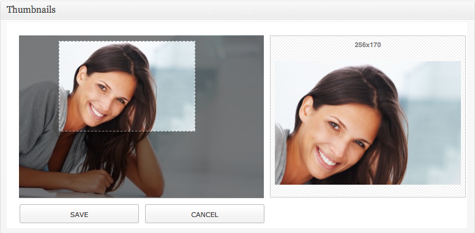
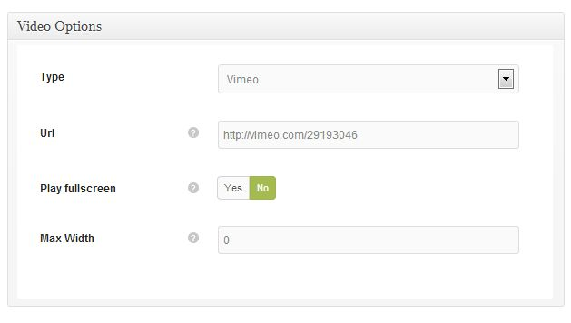
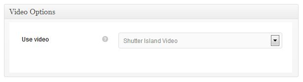
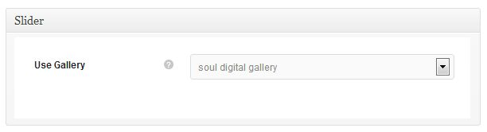
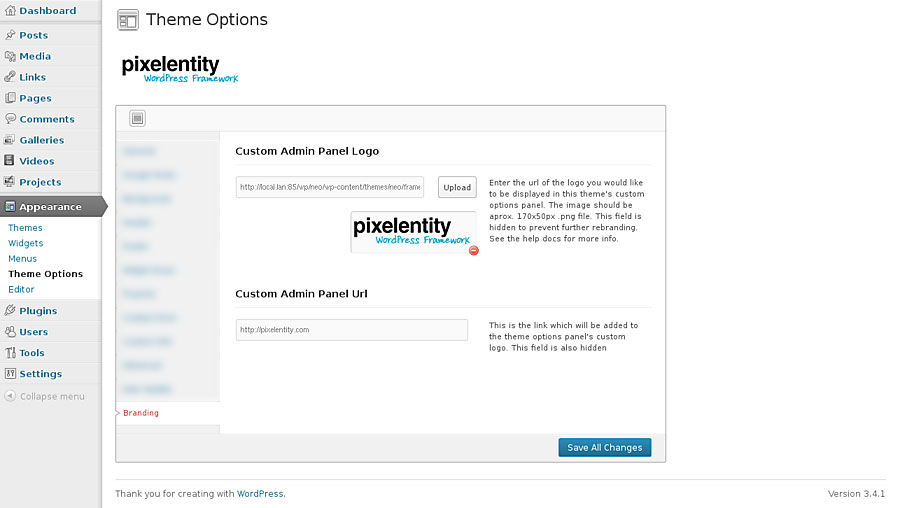

1 Getting Startedtop
1.1 Download Package Contents
Once you have downloaded and unzipped the Form package you will be faced with a list of files and folders. An explanation of these is as follows. Any item not mentioned here should be ignored for the moment.
Folders
| Form.theme.zip | This is a zip archive of the theme. This is used for installation method 2 (see below) | |
| docs | This is the help documentation. To view simply open index.html found inside this folder | |
1.2 Installing Your Theme
Once you have downloaded the Form package from Themeforest.net, there are 2 ways of installing this theme. These are as follows:
METHOD 1
- Unzip the download package using Winzip or equivalent.
- You will see another zip archive file inside called Form.theme.zip, unzip this file also using Winzip or equivalent software and using an FTP client (eg. Filezilla), upload its contents to your WordPress installation. You will need to place the folder into the following location: wp-content/themes
- Now inside your WordPress admin area, go to Appearance > Themes and there you will see the Form Theme.
- Click Activate to activate the theme. If you do not see the theme in this screen, you have done something incorrectly. Review the last few steps again.
METHOD 2
- Unzip the Form download package. Once unzipped you will see a zip file named Form.theme.zip, this is a compressed version of the theme.
- Now inside your WordPress admin area, go to Appearance > Themes > Install Themes (tab) > Upload
- Click browse and locate this Form.theme.zip file and upload it
- Now you will see the Form theme in the Manage Themes tab.
- Click Activate to activate the theme. If you do not see the theme in this screen, you have done something incorrectly. Review the last few steps again.
Installation Video
Here is a link to an video showing the installation of the theme and the importing of demo content:
INSTALLATION VIDEOCongratulations you have now successfully installed the Form Theme
1.3 Theme Installation Errors
Do not upload the Themeforest download package directly to your WordPress site, because this will lead to errors. Make sure to Unzip this package and inside you will find the theme zip archive: Form.theme.zip. This is what you will need to upload to your WordPress installation
If you upload / Install the Form theme and you get one of the following errors, then you have forgotten to unzip the download package.
- This theme is invalid
- This theme is missing a style.css
2 Theme Setuptop
Before you start using the Form theme, a few setup steps are required. This section will walk you through these steps.
2.1 Importing Demo Content
Some buyers like to install their theme and have it look exactly like the Themeforest preview site. If this is something you would like to do, then follow the steps in this section. This step is optional so feel free to skip it. The subsequent sections will provide all the instructions you need to insert your own content manually.
The dummy content inserted in this step will not contain the beautiful images seen in the Themeforest.net demo. These images cannot be included because they are commercial images, which we have purchased for theme demonstration only and we do not have a redistribution license for these assets.
To Import Demo ContentMake sure to install and activate the Form theme before importing any demo content.
![[Import%20Demo%20Content.png]](shots/Import Demo Content.png)
- Install and activate the Form theme. (See section above)
- Go to the Form theme options Appearance > Theme Options
- The General tab should be open by default, but if not click it to show the general options.
- The very first section in the General is the demo Content import section.
- Click the large green Import Demo Content button once only.
- The theme will now import our demo content into you site. A progress bar will inform you of the import processes progress.
- This importer will basically import posts, pages, comments, custom fields, categories, tags, sidebars, widgets, menus and all configuration from our preview content export file.
Please note that dummy images will be used instead of the premium image assets we have used in our online preview.
Alert 2 If you already have content in your site, you will be asked to confirm the import, but if your site is a fresh installation of WordPress, there will be no confirmation request. Importing demo content will not overwrite existing content such as posts or pages, but it will replace all sidebar and widget configuration. So please be aware of this before you decide to do this process.
3 Theme Structure - How It Workstop
The Form theme is essentially a multi-page theme with each of its pages being made up of one or mode sections. These sections are inserted, arranged and filled with content vis the "Content Builder" page template. To construct these pages you need to follow these steps:
- Create a page using the "Pages" main WP menu item.
- In the page attributes box on the right hand side, select the "Content Builder" page template.
- The WP editor will disappear and be replaced with the visual content builder.
- Click "Add Block" to open the list of all possible modules.
- Select which one you wish to add and fill out all of its fields/options.
- More blocks can be added to the layout in the same way. See the Content Builder section for an explanation of all blocks and their associated options.
- Finally publish the page.
4 Custom Thumb Croppingtop

The Form theme contains a custom thumbnail cropping feature. This feature is most useful if you want to control how your large images are cropped when they are for example shown in your portfolio grid. With this feature you can control exactly how the thumbnails are created from your larger images.
To use this feature go to:
Media > Library in the main WordPress menu. Now select any image from the library, an image used in your projects would be most suitable. On the main attachment page, scroll down until you see the dialog box entitled: "Thumbnails". To define a custom crop for a thumbnail, do the following:
- This dialog will contain all of the thumbnail version of this attachment which have been auto-generated by the theme for use in those areas you have inserted this image. If this image features in many areas of the theme, or has done at some stage, but was replaced, this dialog may contain numerous thumbnails.
- Find the thumbnail which corresponds with the size of the thumbnail in your portfolio page (which you wish to re-crop). You may need to check the size of that image in your portfolio grid page. You can do this with an element inspector which is built into most modern browsers. Use it by right clicking once you are hovering the image, then select "Inspect Element" from the context menu. Now you should be able to find the image size in the panels which appear.
- Once you have found the thumb you are looking for, click it in the dialog. This will open the thumb cropping control, hiding all other thumbs in the process.
- With your mouse you can now resize and reposition the cropping frame in the window on the left. Once the position has changed you will see a preview of the resulting thumbnail in the window on the right.
- When you have found a suitable crop for this thumbnail, click the "Save" button. The crop control will close and the other thumbs will reappear.
- Now refresh your portfolio grid page to view the updated thumbnail. Remember to clear your browser cache, otherwise the updated thumbnail may not appear.
Once thumb cropping has been altered, the browser cache should be cleared before viewing the page which contains the updated thumbnail.
5 Creating Poststop
The Form theme contains 3 different post formats - Standard, Video and Gallery.
5.1 Common Options
The following option is common to all post types.
| Background Image | Enter the image here which will appear in the full width header area on the single post page. | |
| Alternate Splash | By default the full width splash area on each page automatically get the title of the page in large white writing. If you would like to enter a custom message into this area, you can set this option to YES and the following options will appear below. | |
| Splash Title | This will be an alternate title (large text) | |
| Splash Subtitle | This will be a subtitle (small text) displayed above the splash title. | |
| Button URL | An optional button can be displayed in this section also. The destination URL for this button would be entered here. Leave empty to hide the button. | |
| Button Text | This would be the text label for the button. | |
| Open in a new window | This options determines if, when the button is clicked, its destination url opens in a new window/tab or in the current window/tab. | |
5.2 Custom Metaboxes
Form supports several post formats, some of them like
Video or
Gallery require additional configuration parameters which can be set in the Metabox Area, under the post/page content editor. Each time a Post Format is selected, the page updates and only the Metaboxes relevant to the current selections will be shown.
5.3 Post Format: Standard
This format accepts an optional featured image. To insert this featured image do the following:
- In the Featured Image box, click Set featured Image
- This will open the WP media loader. Select the image you wish to use for the featured image. The resolution should be large, minimum of 1000px wide and the pixelentity framework will auto-generate the size required for the post. ( The image should be optimized for web and devices and should have a file size generally less that 300kb. The smaller the file size the better, as long as the image quality is not compromised. )
- Once the image is loaded ensure the original size is selected and click the Set as Featured Image button.
- Close the media uploader window and publish your post.
5.4 Post Format: Video
This format accepts a custom video post type as its media content. To insert this video do the following:
- Scroll down the page to the Video Options Metabox. There you will find a drop menu containing the list of all the custom video post types which have been created.
- Select the video you wish to feature in this post.
- You can also add a featured image to this post. If one is added it will become the cover image for the video item. If no featured image is entered, the video item will attempt to load its default cover image generated by YouTube or Vimeo, depending on which service you are using.
- Now publish the post.
It should be noted that if you are using the auto cover image fetching method. The theme will only be able to fetch this image is the original video uploader has permitted it. This is usually permitted by default except for videos marked "private". If the video is private, no image will be loaded.
In order for a video to appear in the list, it first needs to be created. See the section on Creating A Video for more information.
5.5 Post Format: Gallery
This format accepts a custom gallery post type as its media content. To insert this gallery do the following:
- Scroll down the page to the Gallery box. There you will find a drop menu containing the list of all the custom gallery post types which have been created.
- Select the gallery you wish to feature in this post.
- Underneath the list of galleries you can specify the width and height of the desired gallery. These values may mean that your images will be cropped in order to achieve the entered dimensions. The extend of the cropping depends on the image's original aspect ratio. To avoid cropping of the images leave these fields blank and the gallery will be sized to fit its content / container.
In order for a gallery to appear in the list, it first needs to be created. See the section on Creating A Gallery for more information.
In this theme all gallery posts will display their content as a slider.
6 Creating a Gallerytop
The Form theme features a Gallery custom post type. This can be found in the main WP admin menu
Galleries. All gallery type posts and portfolio items will need to have their gallery content created first using this custom post type. Once it has been created here it will be available to be inserted into those areas.
6.1 Direct Upload Gallery
This type of gallery is most suited for when the images you want to display are not already uploaded to your WordPress installation, it will present you with a big "Drop Files Here" area into which you can just drag and drop images from your hard drive. The gallery will take care of everything and, once the upload process is done, you can just save/publish. The image order can be manually altered by dragging thumbs to suit your needs.
To create a Direct Upload Gallery do the following:
- Select the Galleries item in the main admin menu & select "Add New".
- In the Gallerybox, select "Direct upload".
- Drag and drop your images into the Upload Gallery Images section's drop zone with the dashed outline.
- These images will now load and appear below the drop zone in the Gallery Content area as thumbnails.
- You may drag these thumbnails to reorganize the sequence of images if this is important.
- You may also add an optional featured image to the gallery post. This will be used as the cover for the gallery post in certain configurations.
- Now click Publish to publish this gallery post. This type of post is mostly used to provide content for another post or portfolio project. The post may also be viewed in it's own page however by clicking the View Post button.
6.2 Gallery Image Display Options
The Form theme contains one single display option - Slider.
- Slider: The content of the gallery will be displayed as slider. There are no additional options for this mode.
However a gallery single page will display the gallery images in a grid format. When these times are clicked a larger version of the image will open in a popup lightbox viewer. To see the single gallery page, once you have created and published a gallery, click the "view page" button located beside the gallery's permalink.
6.3 Media Tags
The WordPress media library doesn't allow you to categorize attachments/images in any way besides the upload date. For this reason, in our framework, we have introduced a feature called "Media Tags". Media Tags work exactly like regular "Tags" do for posts: each image can be assigned one or more tags which can then be used to group similar/related images.The media library admin page has been expanded to allow easy media tags management and image filter by tag.
6.4 Media Tags Gallery
When WordPress media library is already filled with some images, you can categorize them by using media tags. Once you have created one or more media tags, you can use them to create a gallery. Unlike the direct upload case, the gallery will now show a list of all existing media tags: by selecting one (or more) tag from the list (and clicking the refresh button), all the images assigned to those tag will be automatically added to the gallery. Since the same tags can be used in multiple galleries, you don't need to upload the same image multiple times in order for it to appear in different places. Whenever you assign additional images to a media tag, every galleries making use of these tags will also update its content automatically.
See a video of this process in action:
MEDIA TAGS VIDEO
To create a Media Tags Gallery do the following:
- Select the Galleries item in the main admin menu & select "Add New"
- In the Gallery Optionsbox select "Media tags (Any)" or "Media Tags (All)". For an explanation of media tags see the Media Tags section above.
- Any will includes all the images matching at least one of the selected media tags.
- All will include all the images matching all the selected media tags.
- Select one or more Media Tags from the list
- Click Refresh button
- These images will now load and appear below the drop zone in the Gallery Content area as thumbnails.
- You may drag these thumbnails to reorganize the sequence of images in the Gallery if this is important.
- You may also add an optional featured image to the gallery post. This will be used as the cover for the gallery post in certain configurations.
- Now click Publish to publish this gallery post. This post will not appear in your website. This type of post is only used to provide content for another post or portfolio project. The post may be viewed in it's own page however by clicking the View Post button.
7 Creating a Videotop
The Form theme features a video custom post type. This can be found in the main WP admin menu
Videos. All video type posts and portfolio items will need to have their video content created first using this custom post type. Once it has been created here it will be available to be inserted into those areas.

To create a video custom post do the following:
- Select the Videos item in the main admin menu & select "Add New"
- In the Video Optionsbox select what type of video you would like to create.The options are Youtube and Vimeo
- In both video types, you just need to insert the url of the online video into the Video URL field.
- Select whether the video will play fullscreen using the "Play Fullscreen" option.
- Set the max-width of the video when it is played in fullscreen mode.
- Finally, click Publish to publish your video custom post type. This post will not immediately appear in your website. This type of post is normally used to provide content for another post or portfolio project. However the post may be viewed in it's own page by clicking the View Post button.
When inserting the video url, make sure the url does not include "https" but should simply be "http", because this can prevent the video from being loaded correctly. Also make sure that the video's url is the full url and not some kind of shortened/abbreviated url eg. http://youtu.be/... because this can also stop the video from loading.
8 Creating a Projecttop
The Form theme features a Project custom post type. This can be found in the main WP admin menu
Projects. All portfolio items will need to have their project content created first using this custom post type. Once it has been created here it will be available to be inserted into portfolio pages.
To create a Project custom post do the following:
- Select the Projects item in the main admin menu & select "Add New"
- Give the Project a title
- Enter project text content into the WP editor. Here shortcodes are supported, eg. Columns.
- Select a format for the project. The project format determines how the project appears on the single project page and also the expanding project preview area. The options are: Standard, Video and Gallery. See below for an explanation of each of these types and their associated options.
- Set the projects Featured Image This will be the image which appears on the portfolio grid thumbnails.
8.1 Common Options
All projects, irrespective of the project format, have some common options. These are as follows:
| Background Image | This is the background image for the full width page header. | |
| Portfolio Link | Insert the url of the main portfolio page here. This will be the link used when the thumbnails icon, seen in the single project page header, is clicked by a user, trying to go back to the portfolio main page. | |
| Open In Lightbox | Projects may be viewed in a single project page, or in a lightbox, which opens directly above the portfolio grid. This option determines if the lightbox is used. | |
| Numbers | Some numbers to describe the project may be entered here. Multiple numbers can be added by clicking the "add number" button and entering a value and description pair. These numbers are organised into a horizontal row. A single row contains 3 numbers. If more then 3 are entered, a second row is started under the first. | |
| Intro Text | Enter here some intro text for the features section. Simple html tags are supported here. | |
| Features | Add features to the project page. Features are organised into icon, title, description info blocks. These get places into a list under the intro text. | |
| Features Image | This is the image which is associated with the features list. | |
Footer Sections
Each one of these projects have the following common options related to the single project page to define what section of the footer are shown in this page. These section are setup in the theme options > footer options.
| Display Logos | Choose whether the logos are displayed on this page's footer. | |
| Display Call to Action | Choose whether the call to action section is shown on this page's footer. | |
8.2 Project Format: Standard
This format is the most simple project type and has no additional options and on the single projects page holds one single image
The featured image inserted in the above steps. Therefore you can now publish the project.
8.3 Project Format: Video
This format accepts a custom video post type as its media content. To insert this video do the following:

- Scroll down the page to the Video Options box. There you will find a drop menu containing the list of all the custom video post types which have been created.
- Select the video you wish to feature and publish the the project .
In order for a video to appear in the list, it first needs to be created. See the section on Creating A Video for more information.
8.4 Project Format: Gallery
This format accepts a custom gallery post type as its media content. To insert this content do the following:

- Scroll down the page to the Slider box. There you will find a drop menu containing the list of all the custom gallery post types which have been created.
- Select the gallery
1
you wish to feature in this project.
In order for a gallery to appear in the list, it first needs to be created. See the section on Creating A Gallery for more information.
All Gallery type project formats will display their media content as a slider.
9 Creating Pagestop
The Form theme features several different page templates for you to choose from. Each of these templates has a different configuration of options. These templates and their associated options are explained here below.
Some of the pages in this theme are made up of a flexible arrangement of independent sections. These pages are more complex than the standard pages made using a page template. Hence these types of pages are created using the "Content Builder" template. The options associated with this page type will be explained in a section below entitled "Content Builder".
To Create a Page:
- Go to Pages>Add New in the main admin menu.
- Give the page a title (This will appear at the top of the page in the browser)
- Enter some content for the page shortcodes are supported.
- Select which page template to use for this page. See above for an explanation of the page templates which are available in the Form theme.
- In the sidebar box select what sidebar you would like to use for this page. For sidebars to appear in this list you first have to create them in the Form theme options and add some widgets. (Some page templates do not support sidebars and hence this box will not appear)
- Depending on which page template you have chosen the final few steps will differ. So we will now look at these steps on a template by template basis.
Most of the page templates are self explanatory. Once selected their custom options appear and can be set/filled. There are a few which are a bit more complex and these will be dealt with in detail below.
9.1 Page template: Common Options
Each page has the following common options.
| Background Image | This is the image which is displayed in the page's full width header splash area. | |
| Alternate Splash | By default the full width splash area on each page automatically get the title of the page in large white writing. If you would like to enter a custom message into this area, you can set this option to YES and the following options will appear below. | |
| Splash Title | This will be an alternate title (large text) | |
| Splash Subtitle | This will be a subtitle (small text) displayed above the splash title. | |
| Button URL | An optional button can be displayed in this section also. The destination URL for this button would be entered here. Leave empty to hide the button. | |
| Button Text | This would be the text label for the button. | |
| Open in a new window | This options determines if, when the button is clicked, its destination url opens in a new window/tab or in the current window/tab. | |
Footer Options
These options are used to define what section of the site's footer are shown in this page. These section are setup in the theme options > footer options.
| Display Logos | Choose whether the logos are displayed on this page's footer. | |
| Display Call to Action | Choose whether the call to action section is shown on this page's footer. | |
9.2 Page template: Default Template
This page template is the standard page. Editor content inserted in this page template will display immediately underneath the page title. There are no additional options available in this page.
10 Content Buildertop
This page template is used to create a page layout which is made up of a flexible arrangement of one or more independent modules. Basically all pages in this theme are made using the content builder, except those which are custom post types, such as galleries, projects and blog posts themselves.
This builder component consists of blocks, which can be inserted as required. The following blocks and options are available in this builder.
10.1 Services Block
This block is used to insert a services section into a the page. Services section have 3 possible layouts. These are as follows:
Default - This is a half and half layout. The left side of the block is filled with an image while the right side consists of a title, description and then a 2 column list of separate individual services. Each of these services consists of an icon, title and text description.
Alternative - This layout is similar to the half and half default layout. The only difference is that the individual services are rendered as a single column list rather than a 2 column layout.
Video - This services layout consists of a full width section with a video background. Superimposed on this video is a 4 column list of services below a main title and description. Each service is made up of an icon title and description as in the other 2 layouts.
The options available in this block are as follows:
| Layout | This is the 3 available layouts of this block, described above. | |
| Title | Enter here the title for this section | |
| Content | Enter the text introduction for this section, displayed under the title. | |
| Image | Upload the image to be used in all layouts except the video option. | |
| YouTube Video | Enter the YouTube video link for the background to be shown in the Video layout option. Ensure the video's link uses "http" and not "https". If the latter is used, manually remove the trailing "s". | |
| Button Label | Enter the text label for the button shown under the services contained in this section. | |
| Button URL | Enter the destination URL for this button. | |
Individual Service item options:
| Icon | Select the icons from the visual list of icons, which best represents your services. | |
| Title | Set the title for your service. | |
| Content | Enter the text description of your service here. | |
To add new services to the section either click the green "+" icon at the bottom of the services block, or click the "duplicate/clone" icon located at the bottom of the individual service item's options block. Using the clone option will copy the clicked service's details.
10.2 Blog Block
This block is used to show a blog section in the page. The following options are available to filter/determine which posts are displayed in this blog section.
| Max | Set the max number of posts to show. If the paged option is set to YES, any other results found will be shown using a pager. | |
| Selection | Manually insert posts | |
| Categories | Filter posts by category | |
| Tags | Filter posts by tags | |
| Format | Filter posts by format | |
| Order | Set post ordering in either ascending or descending order. | |
| Order By | Choose the basis for ordering the results. Options here are as follows: None, ID, Author, Title, Date and Random. | |
| Paged Result | Show a pager for any entries found above the max number set in the first option. | |
10.3 Columns Block
This block is used to add columns of text to the page layout. This block has only one options.
| Layout | Set here the number of columns you wish the layout to contain. Once this has been set, then you will need to add text blocks to this column block. | |
| Padding Top | Amount of section top padding in pixels. | |
| Padding Bottom | Amount of section bottom padding in pixels. | |
Each text block have the following options:
| Layout | Select if the text block should have a boxed or full width layout. | |
| Content | Enter the content for this text block. Simple HTML tags are supported. | |
10.4 Portfolio Block
Use this block to add a portfolio section (grid of projects) to the page layout. This block has the following options which may be used to filter the project displayed in this section.
| Max | Set the max number of projects to be displayed in this section. | |
| Format | Filter the projects displayed based on their format (Image, Video, Gallery) | |
| Paged Result | If more then the max amount of projects is found, they will be displayed in a pager if this option is set to yes. | |
| Use Lightbox | If set to yes, the project media will be opened in a lightbox once a user clicks on a thumbnails. if set to no, the single project page will be opened. | |
10.5 Numbers Block
This block is used to insert numbers or statistics to describe anything about you or your company. Multiple numbers can be added by clicking the "add number" button and entering a value and description pair. These numbers are organised into a horizontal row. A single row contains 3 numbers. If more then 3 are entered, a second row is started under the first.
10.6 Contact Block
This block is used to insert a contact form into a page layout. The contact form consists of a title and subtitle pair, sent message and error messages and finally an optional Google Map. The following options are available in this block:
| Info | The title and subtitle for the contact form may be entered here. Simple HTML tags are supported, such as heading and paragraph tags, etc. | |
| Mail Sent Message | The Message shown when the form message has been sent without errors. | |
| Form Error Message | The Message shown when the form message has not been sent due to errors. | |
| Show Google Map | Whether to display Google Map in the footer or not. | |
| Latitude | Latitudinal location for the map center. See the help documentation for a link to a utility used to convert addresses into lat/long numbers. | |
| Longitude | Longitudinal location for the map center. See the help documentation for a link to a utility used to convert addresses into lat/long numbers. | |
| Zoom Level | Enter the zoom level of the map upon page load. The user is then free to adjust this zoom level using the map UI | |
10.7 Recent Work Block
This block is used to insert a recent work section into a page layout. A recent work section consists of a gallery of items which can be browser by the user/visitor by scrolling or dragging the images horizontally. A gallery custom post type is required to provide content for this block. The following options are available for this block:
| Title | The title for this section. | |
| Content | The short description for this section, which will appear beneath the title. | |
| Background | Here an image may be uploaded which will form the background for this section. | |
| Gallery | The gallery which will provide the contents for this section. | |
| Button Label | The text label for an optional button displayed in this section. | |
| Button URL | The destination for this optional button. | |
10.8 Testimonials
This block is used to insert a section containing one or more testimonials. The testimonials are displayed in a full width slider. Each testimonial consists of a quotation text and a 2 part cite, part 1 is the cite's name and part 2 is where that quotation was sourced. The following options are available in this block:
| Title | The title for the section | |
| Content | A short description of the section which will appear below the title. | |
| Name | The name of the person saying the quote (cite) | |
| Via | Where has this quote been heard, said, or taken from. | |
| Quote | This is the quotation text itself. Inverted commas are not automatically added. | |
Additional testimonials need to be added by clicking the green "+" icons at the bottom of the testimonial item block.
10.9 Team Block
This block is used to insert a section about company staff members. This block is almost identical to the services "default" layout, the only difference being that instead of an icon being presented beside the service item title, here it is the staff members title and icons are shown after the description text instead, where they represent this staff member's relevant social media profiles.
11 Theme Optionstop
In this section we will explain the custom options that come with the Form theme, where to find them and what you would use them for.
Form's custom theme options can be found at
Appearance > Theme Options. These options will appear once the Form theme has been successfully installed. The various options are organized into vertical tabs on the left side. Simply click on a tab to show its contents in the main content area.
In the admin panel itself, beside each option, you will see a short description of what that particular options does. In most cases these short descriptions will be enough to explain how to use the custom options found in this theme. Nonetheless all options are explained here below.
11.1 General Options
General options usually with a global or site wide effect. This tab is open by default when this page is loaded.
| Import Demo Content | This option allows you to import ready made content for the theme to make it look like the theme's online demo site. See the theme setup section for more information. | |
| Logo | This is the logo for the whole site and appears in the top left corner - Replace with your own logo in .png format. | |
| Header Image | Enter the background image for the site header. This is the global site header background image. It can be over written using the background image option in all individual posts , projects, pages. This image will be used if those options are left empty. | |
| Favicon | This is the favicon or bookmark icon for the website, replace with your own 16x16px icon. | |
| Custom CSS | This field allows the insertion of custom CSS selectors. This is required if you wish to change some aspect of the theme's default CSS. CSS selectors inserted here will overwrite those in the theme's default CSS. Note: For notes on how to find the CSS selector of the element you wish to change, please refer to the section entitled "Custom CSS" | |
| Custom JS | This field is used to add custom javascript to the theme. For example this field would be used to add Google Analytics tracking code to the theme. | |
11.2 Color Options
This tab controls the color(s) of the theme. You can reset the options to the original color at any time by clicking "Restore Default" link just below the input field.
| Primary Color | Using the color picker, set the primary color of the theme. | |
11.3 Font Options
In this tab you can specify Google Web Typefaces to be used in various parts of the theme.For each elements listed below you can choose any front from the Google Web Font library. Once you have chosen a font from the list, you will see a preview of this font immediately beneath the list box. Icons will appear on the right hand side of the preview. These icons indicate what font weights are available for that chosen typeface. The Icons are as follows:
- R -- Regular
- B -- Bold
- I -- Italics
- BI -- Bold Italics
When deciding what font to use, ensure that the chosen font contains the font weight required by the element in the theme, where it is being applied. For example, All main headings are bold, so you need to select a new font for these elements which supports a bold font weight. If you select a font which does not have a bold icon, the font will not be applied.
The full list of available fonts and their respective weights can be seen in the
Google Web Font Library
11.4 Footer Options
| Email Address | Enter the email address to show in the theme footer. This address will be used for the contact form in the theme. | |
| Phone Number | Enter the phone number to show in the theme footer | |
| Address | Enter the address to show in the theme footer | |
| Address Link | Enter the url to visit when the address is clicked | |
| Copyright | Here the copyright notice of the website is inserted. Simple HTML is supported. | |
| Social Profile Links | Enter links to social media profiles. Click the "Add Social Link" button and a pair of field will appear below the button. The first field is the name of all available social network icons, just choose one using the drop menu, while the second field is a url field where you can enter the link to your profile. | |
| Logos Gallery | Select the gallery to provide content to the logos area in the theme footer | |
| Call To Action Title | Enter the text title of the call to action section | |
| Call To Action Subtitle | Enter the subtitle for this section | |
| Call To Action Button 1 Text | Enter the text label for the first button in this section | |
| Call To Action Button 1 Link | Enter the destination url for the first button in this section | |
| Call To Action Buttons Separator | Enter the word or symbol which will separate the buttons, eg. &, or | |
| Call To Action Button 2 Text | Enter the text label for the second button in this section | |
| Call To Action Button 2 Link | Enter the destination url for the second button in this section | |
11.5 Contact Form Options
| Subject Line | Enter a custom subject line which will appear on all email sent from the contact form. This is useful when setting up email filters | |
11.6 Widget Areas Options
This tab controls the creation of widget areas in the theme. The Form theme supports widgetized sidebars. This theme also supports unlimited widgetized areas, this means that any post can display a different sidebar. Each sidebar's contents can be unique.
| Widget Areas | Create new sidebar widget area for use in the theme. Once the widget area has been created, it will be available on the Appearance > Widgets page where you can add widgets to it. | |
11.7 Advanced Options
This section controls a few more advanced options for the theme. These options would only concern the more advanced users.
| Javascript Compression | This instructs the theme to use a compressed version of the javascript source code required by this theme. Using the compressed javascript speeds up the loading of the theme's pages. | |
| CSS Compression | This instructs the theme to use a compressed version of the CSS stylesheets required by this theme. Using the compressed CSS speeds up the loading of the theme's pages. | |
| Show Thumbnails | If set to "Yes", featured image thumbnails (if inserted) are shown in the post list view in the WordPress default admin post list - Posts>All Posts. This simply makes it easier to recognise posts based on their featured images as opposed to their titles. | |
The only reason for disabling the "CSS/JS Compression" options would be if you wished to make significant changes to the CSS or Javascript sources for this theme. For minor CSS and Javascript changes to the theme, the Custom CSS/JS fields in the General Theme options tab (See above), should be sifficient.
11.8 Branding Options (Hidden)
These options allow our buyers to rebrand the custom admin panel with their own logo and link. These options are hidden by default. See the section on
Branding The Admin Panel later in this documentation for more information.
| Custom Admin Panel Logo | Upload a logo to be used as the branding of the admin panel | |
| Custom Admin Panel Url | Attach a link to this new logo | |
When changing any settings in the theme options panel, always remember to save those changes before navigating away from the page. To do this simply click "Save All Changes" button at the bottom of the options page.
12 Widgetized Areas & Inserting Widgetstop
If you have imported the demo content supplied with this theme, then this setup will be already done. In which case you may only need to modify things. However we still recommend that you read this section carefully because it contains important information which will be useful during modification of the imported widget configuration.
The Form theme features support for unlimited widget area. There is 1 widgetized areas in this theme: The sidebar. Because of the unlimited widget area support in this theme, you can insert a unique sidebar into each and every page which used the "Blog" page template. This is very easy to setup and you will be taken through this process in the rest of this section.
Please note once a sidebar is assigned to a blog page, all posts on that blog page will display the same sidebar. There is no option to specify a different sidebar on a post by post basis.
12.1 Creating A Widgetized Area
- Go to Appearance > Theme Options in main menu
- Select the Widget Areas tab
- Enter a title for your new widget area, click Add New and your widget area will appear in the table below the input field.
- Save your changes
12.2 Inserting Widgets
- Go to Appearance > Widgets in the main menu
- On the right side of this page you will see the available widget areas.If you have not imported the demo content you will see 1 widget areas created when you install the Form theme: the Default sidebar widget area.
- These widget areas will be empty and so will appear minimized.
- Widgets, once added to the sidebar will expand so that you can fill in the various options associated with that specific widget.
- Once you have completed the widget options, click Save and then "close" to minimize the widget.
12.3 Placing Your widgetized Area Into The Theme
Once you have filled your widget area with your desired widgets, you will still need to tell the theme on which posts you would like to display this widget area. To do this see the following:
To Insert The Widget Area as a Sidebar:
- On some pages you will see on the right hand side below the "tags" box, an additional content boxes entitled Sidebar.
- This boxes allow you to select which widget area is to be used specifically on that post for the sidebar. This may be different for each and every page template. Some templates do not support sidebars, in this case no sidebar selection box will appear on that page.
13 The Main Menutop
The Form theme contains 1 menu locations, the
Main Menu. This menu does not support any sub levels of menu items. In this section we will outline the steps involved in creating the menu for this theme.
13.1 Creating A Menu
Before you create your menu for this theme, make sure your pages/sections have been created already. This way they will be available to be inserted into the menu.
- Go to Appearance> Menus in the main admin menu.
- At first you will probably need to add a menu, give it a name & click Create Menu. The new menu will appear in a tab in this location. Click on this tab to begin adding menu items.
- Use the dialog boxes on the left hand side of the page to add items to your menu. Select the item you wish to add and click "Add to Menu".
- Now you can drag the newly inserted menu item to their correct sequence and rename their titles if required.
- After you have added and edited the menu items click Save Menu in the bottom of this area.
If you have imported demo content supplied with this theme, then this menu will already be made however it may still need to be saved again before working correctly, to do this click "Save Menu".
13.2 Adding The Menu To the Theme
Finally you will need to specify the location for this menu. As mentioned above, the Form theme contains 1 possible menu location; the Main Menu.
To assign the Main Menu
- Go to Appearance> Menus in the main admin menu.
- At the top left of that page you will see a panel titled Theme Locations
- Here there will be a select box under the two available locations in the Form theme.These select boxes will hold a list of all created menus.
- so select the menu you wish to place in the Main Menu location from the drop down and then click Save.
14 Shortcodestop
This theme contains several useful shortcodes. These are basically helper codes which can be inserted into the default WordPress editor and when the page is rendered they will become full elements. The type of element depends on the type of shortcode used. Shortcodes are available for inserting videos buttons and columns. In this section we will list these available shortcodes and the properties or parameters associated with each one.
To insert a shortcode simply click the
Insert Shortcode button in the toolbar area of the default WordPress editor.
![[Shortcode%20Button.png]](shots/Shortcode Button.png) ^ The Shortcode Icon seen above in blue "SC" on right end of the icons in the toolbar.
^ The Shortcode Icon seen above in blue "SC" on right end of the icons in the toolbar.It should be noted that it is not sufficient to copy and paste a shortcode's short syntax from one page/post/theme's editor window to another. To be inserted correctly each shortcode needs to be inserted using the shortcode editor. If this process is not followed, the page will not render correctly and the layout will not look as expected.
To Add a Shortcode do the following:
- Position the cursor in the editor in the specific position where you wish to place the shortcode or element.
- Click the Shortcode button to open the shortcode editor/manager dialog (see image above for this button's location.
- Select the desired shortcode type from the dropdown list
- Fill in all of the required parameters for that shortcode
- When you are ready, click Insert Shortcode the editor will then close and you will see the shortcode appear in the editor window.
14.1 Shortcode - Button
Use this shortcode to insert a button.
| Url | Url a button will link to | |
| Text | Text displayed inside the button | |
| Open in new window | Should link be opened in new window or not | |
| Color | Select between two color modes, dark and light, based on the background you are putting them on. | |
| Center Button | If set to Yes, the button will be centered within its container, otherwise the button will got with the natural flow of the layout in which its placed. | |
14.2 Shortcode - Columns
Use this shortcode to create a column based layout for your content. When creating column based layouts using this shortcode, keep in mind that on smaller resolutions all column based layouts will become narrower before collapsing to a single column in the mobile resolution.
| Layout | Choose layout for columns. Chosen layout's width ratio is visually displayed below selector. | |
14.3 Shortcode - Video
Use this shortcode to insert videos into the post or page content areas. YouTube and Vimeo Videos are the only supported video types. For Videos to appear in the drop list, they first need to be created in the Video custom post type. See the Creating Video Items section.
| Use Video | Select the video from the drop list which you would like to insert. | |
The Form theme uses Google web fonts by default. These fonts are as follows:
| General Font | Lato (Sans Serif) | |
| Heading Font | Montserrat (Sans Serif) | |
If you wish to make changes to these fonts you have the following options:
- Use the Custom CSS box in the Theme options to insert new fonts into the theme manually with CSS.
- Insert any Google Web font using the "Fonts" tab in the theme options. See the Theme Options section for an explanation of the options in this tab. The section is entitled Google Font Options
- The Fonts Tab also allows advanced users to specify new fonts, line heights, sizes etc. See that page for more info.
16 Theme Translationtop
The only method to translate this theme is Using a POT file.
A POT file is a simple method but it is designed to basically translate the theme's static text content into one other language. For example this would be used when the theme was designed to be used in English, but your website will be in Italian or another language, and you would like to translate all the parts of the theme which are not the content you will be writing. This would included back end translation such as admin field names, descriptions etc, as well as front end static text which is visible to the visitor. These front end items would included things like contact from field names, comment section titles, other titles which appear automatically rather then being actually entered by you. This method is not designed to handle language switching in your website. If you require this more advanced functionality, you will need to use a plugin. No specific plugins have been tested with this theme, and hence we cannot guarantee that they will work.
16.1 Translation Using POT File
To translate the theme using the POT file do the following:
- Create a po file for your language, for example de_DE.po
- Copy all text from provided theme pot file into your po file
- Edit the po file with poedit http://www.poedit.net/
- Create the mo file
- edit wp-config.php file in your installation and set WPLANG so it matches your languages: define('WPLANG', 'de_DE');
- The Theme should now display all messages in your language.
BACKUP YOUR LANGUAGE PO/MO FILES
Upon theme update, language files are NOT preserved.
You will need to manually restore your po/mo files right after the update.
16.2 Modifying The theme's CSS
The Custom CSS field provided in the Form theme's theme options panel should be used for making changes to the theme's CSS styles. This can be found in
Appearance>Theme Options>General>Custom CSS.
To overwrite an elements CSS styles:
- Locate the element's CSS selector using firebug or chrome's element inspector.
- Copy this selector and paste it into the Custom CSS Field found in the theme's custom options "General" tab.
- Add your new styles and you are done.
- Click Save All Changes at the bottom of the theme options page.
Now the theme's default CSS will be overwritten by what you have entered into the Custom CSS box.
17 Javascripttop
17.1 Adding Custom Javascript
Similar to the Custom CSS filed in the theme options, there is also a Custom Javascript field to be used when you wish to insert additional javascript into the theme. The only difference with this field is that the javascript code placed here will not overwrite any existing javascript code. An example of custom javascript code which would be used in this field is Google Analytics. Simply paste in the javascript code provided by Google in this box, save and you're done.
18 Rebranding the Custom Admin Paneltop
As many of our buyers are buying our themes in order to sell to their clients, we have decided to aid this process by designing our theme's custom admin panel to be easily rebranded. Our theme's custom options panel contains a secret option which allows our buyers to rebrand the admin panel with their logo and and afterwards these options disappear. This allows our buyers who provide their clients with themes which strengthen their brand identity with their clients and which don't force cross links to the pixelentity brand.

To rebrand the admin panel do the following:
- Navigate to the theme options page. Appearance > Theme Options
1
- In the browser address bar, add the following query string to the end of the existing url and hit enter.
- A new tab will appear in the Theme Options page named Branding
2
The contents of this tab is shown in the above screenshot.
- Here
3
you can set an image to be used as the logo/ branding for the custom admin panel. You can also set a custom url which will be attached to the logo image.
- To see the changes, click save
4
remove the query string from the url and reload the page.
- The branding tab should now be hidden again and the new logo visible.
See a video of this process-->
REBRANDING THE ADMIN PANEL VIDEO
FOR DETAILS OF UPDATES TO THIS THEME PLEASE REFER TO THE CHANGE LOG AT THE BOTTOM OF THE ITEM'S DESCRIPTION PAGE ON THEMEFOREST.